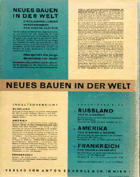

Russland: Die Rekonstruktion der Architektur in der Sowjetunion
This section highlights 1930, the year in which Sophie and El Lissitzky's son Jen, was born. Lissitzky created a birth announcement in the form of a photomontage, superimposing an image of the infant Jen over a factory chimney and a whistle. By linking Jen's future with his country's industrial progress, Lissitzky offered a personal endorsement of the Soviet Union. Lissitzky's commissioned designs for the International Hygiene Exhibition in Dresden (1930) and the Fur Trades Exhibition in Leipzig (1930, #122-126) deploy large lettering, photomurals, and startling juxtapositions of real objects with naturalistic and abstract forms to convey an optimism about Soviet developments in social welfare.
In his graphic designs for books and exhibitions during the years 1927-1930, Lissitzky turned increasingly to film and photography. For the cover of the brochure Architecture. VKhUTEMAS (#108), which he produced in 1927, he brings back the photomontage of the hand with a compass from the Constructor of 1924. He rotates the image to create a symbolic gesture in which the vertical hand and the compass, opened at a forty-five degree angle, echo the typographic arrangement of the three title words.